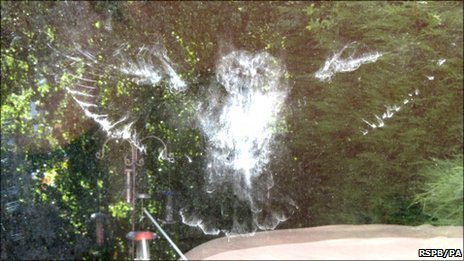

Wednesday, July the 13th, 2011
back to: title, date or indexes

“Fortunately, there was no sign of the bird and we can only assume that it had flown away probably suffering from a headache.”
Details here.